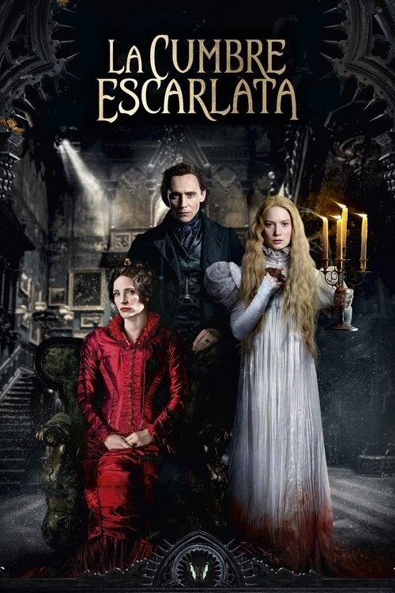

La cumbre escarlata (2015)
Sinopsis Rápida
En una mansión aislada y misteriosa, una joven viuda descubre oscuros secretos familiares y un horror inimaginable que acecha tras las paredes.
Sinopsis Detallada
Edith Cushing, una joven heredera, se casa con el enigmático Sir Thomas Sharpe, mudándose con él a su tenebrosa mansión en los páramos de Cumbria. Allí, descubrirá que su nuevo hogar esconde un terrible secreto, vinculado a una historia de locura, violencia y un pasado oculto. Guillermo del Toro crea una atmósfera gótica opresiva y visualmente impactante, cargada de simbolismo y referencias literarias. La relación entre Edith y Thomas se vuelve cada vez más inquietante, mientras una serie de eventos sobrenaturales amenazan su cordura.
¿Por qué tenés que verla?
- Una experiencia visualmente impactante y atmosférica, con una dirección maestra de Guillermo del Toro.
- La banda sonora y el diseño de producción crean una atmósfera inolvidable de suspense y horror.
- La película explora temas complejos sobre el trauma, la opresión femenina y la manipulación psicológica.
- Actuaciones memorables que transmiten la tensión y el horror.
Idea Extra
Análisis del simbolismo en la arquitectura y el diseño de vestuario de 'La Cumbre Escarlata', explorando sus conexiones con la psique de los personajes.
{{CONTENIDO_RELACIONADO}}